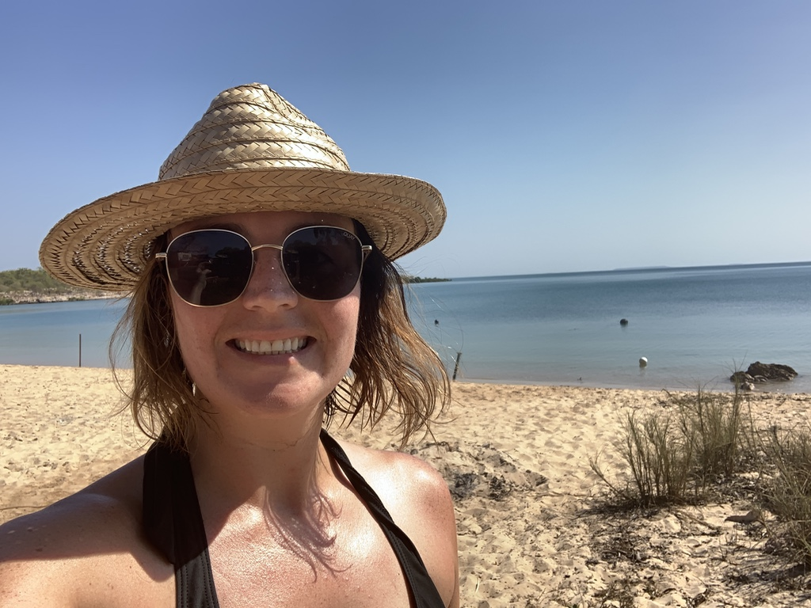

Origins
I am a proud Irish women ,born and bred in Co Mayo in the West of Ireland Mayo Abbey is a small village with approximately 3000 people,lies one of Irelands most important Monastic sites in Western Europe, founded by St Colman in 668 AD Mayo Abbey is unique in that it was founded for Saxon monks. To this day the area is known as "Mayo of the Saxons"

Australia
I moved to Australia in Decemeber 2012 and I have been here since , I have fallen in love with the sun, sea, sand and lifestyle